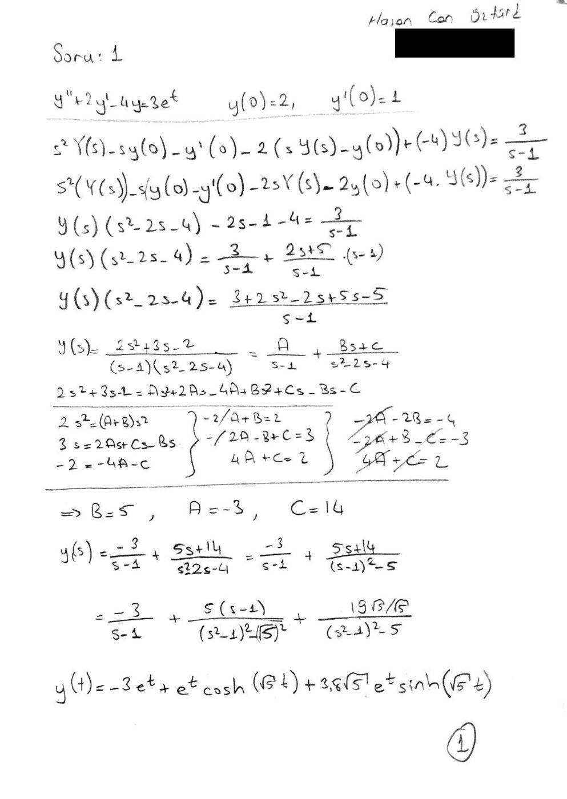
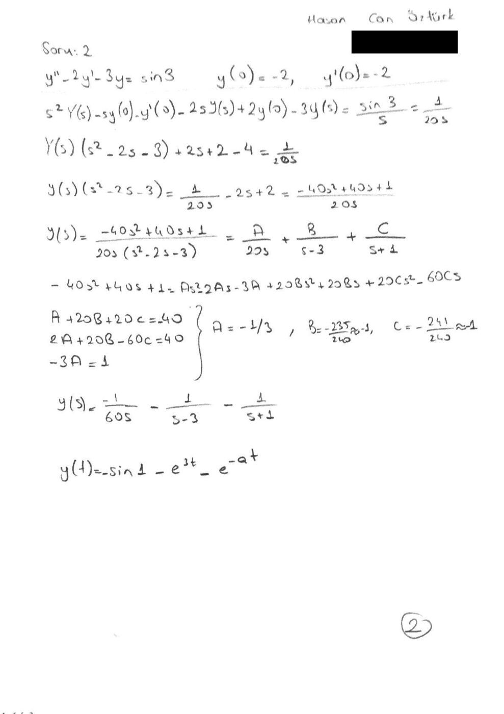
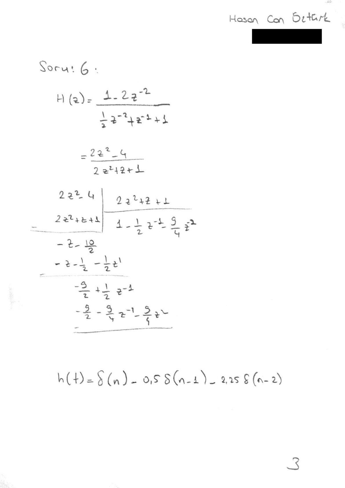

· EEM301
EEM301 Sinyaller ve Sistemler I: Laplace ve z Dönüşümü Ödevi, El Çözümleri ve MATLAB Kodları (2017)
EEM301 – Sinyaller ve Sistemler I · 21.05.2017 · 16.10.2026
Bu yazı, Hasan Can Öztürk'ün Mayıs 2017'de Başkent Üniversitesi EEM301 Sinyaller ve Sistemler I dersi için hazırladığı Laplace ve z dönüşümü ödevini içeriyor. Ödevde altı soru var: ilk ikisi ilk değerli diferansiyel denklemlerin Laplace dönüşümüyle çözümü, 3. ve 4. sorular ters Laplace dönüşümü, 5. soru ilk koşullu bir fark denkleminin z dönüşümüyle çözümü, 6. soru ise ters z dönüşümü. Her soru MATLAB'ın sembolik araçlarıyla (laplace, ilaplace, ztrans, iztrans) çözülmüş; 1, 2 ve 6. soruların el yazısı çözümleri de taranmış. Taranmış sayfalarda öğrenci numarası kapatıldı. Taranmış PDF ve soru1.m–soru6.m dosyaları yazının sonunda ZIP olarak indirilebilir.
Soru katsayıları
Her MATLAB dosyasının başında altı sorunun katsayıları aynı tablo hâlinde yorum olarak duruyor:
%1) 2 -4 3 2 1
%2) -2 -3 3 -2 -2
%3) 2 1 1 -3 -2
%4) 1 -3 1 -3 18
%5) 3 -3 1 3 6
%6) 1 -2 4 -2Örneğin 1. satır, y″ + 2y′ − 4y = 3eᵗ, y(0) = 2, y′(0) = 1 denklemine karşılık geliyor.
Soru 1: y″ + 2y′ − 4y = 3eᵗ
İlk koşullar: y(0) = 2, y′(0) = 1. Her iki tarafın Laplace dönüşümü alınır:
- s²Y(s) − s·y(0) − y′(0) + 2(sY(s) − y(0)) − 4Y(s) = 3/(s − 1)
- Y(s)(s² + 2s − 4) = 3/(s − 1) + 2s + 5
- Y(s) = (2s² + 3s − 2) / ((s − 1)(s² + 2s − 4)) = A/(s − 1) + (Bs + C)/(s² + 2s − 4)
Kısmi kesirlerden A = −3, B = 5, C = 14 bulunur:
- Y(s) = −3/(s − 1) + (5s + 14)/((s + 1)² − 5)

Kâğıttaki sonuç: y(t) = −3eᵗ + eᵗ cosh(√5 t) + 3,8√5 eᵗ sinh(√5 t).
Not: El çözümünde 2y′ teriminin dönüşümü −2(sY − y(0)) olarak, payda da s² − 2s − 4 olarak yazılmış; doğrusu +2(sY − y(0)) ve s² + 2s − 4'tür. A, B, C değerleri yine doğru çıkıyor ama son adım hatalı: s² + 2s − 4 = (s + 1)² − 5 olduğundan doğru sonuç y(t) = −3eᵗ + e⁻ᵗ[5 cosh(√5 t) + (9/√5) sinh(√5 t)]'dir (5s + 14 = 5(s + 1) + 9). Kontrol: y(0) = −3 + 5 = 2, y′(0) = −3 − 5 + 9 = 1.
MATLAB çözümü:
syms s t Y % s ve t domainlerini tanımlı hale getirmek için
denklem='D(D(y))(t)+2*D(y)(t)-4*y(t)=3*exp(t)'; %denklemimizin ilk değersiz hali
laplace_ilk=laplace(denklem,t,s); %denklemin ilk değersiz halinin laplace'si
laplace_son=subs(laplace_ilk,{'laplace(y(t),t,s)','y(0)','D(y)(0)'},{Y,2,1}); %ilk değer bilgilerinin eklenmesi
Y=solve(laplace_son,Y); % Y fonksiyonunun yalnız bırakılması
y=ilaplace(Y,s,t) % Y'nin ters laplace'siSoru 2: y″ − 2y′ − 3y = sin 3
İlk koşullar: y(0) = −2, y′(0) = −2. Sağ taraf sabit (sin 3), dönüşümü sin 3 / s. Kâğıtta sin 3 ≈ 1/20 alınmış:
- Y(s)(s² − 2s − 3) = 1/(20s) − 2s + 2 = (−40s² + 40s + 1)/(20s)
- Y(s) = (−40s² + 40s + 1) / (20s(s − 3)(s + 1)) = A/(20s) + B/(s − 3) + C/(s + 1)
- A = −1/3, B ≈ −1, C ≈ −1

Not: sin 3 ≈ 1/20 yaklaşımı 3'ün derece alınmasından geliyor (sin 3° ≈ 0,052); MATLAB'daki sin(3) ise radyandır (≈ 0,141). Kâğıttaki son satır (y(t) = −sin 1 − e³ᵗ − e⁻ᵃᵗ) de eksik/hatalı. c = sin 3 denirse kesin çözüm y(t) = (c/12 − 1)e³ᵗ + (c/4 − 1)e⁻ᵗ − c/3'tür (özel çözüm −c/3; kökler 3 ve −1).
MATLAB kodu Soru 1 ile aynı, yalnız denklem ve ilk değerler farklı:
denklem='D(D(y))(t)-2*D(y)(t)-3*y(t)=sin(3)';
laplace_ilk=laplace(denklem,t,s);
laplace_son=subs(laplace_ilk,{'laplace(y(t),t,s)','y(0)','D(y)(0)'},{Y,-2,-2});
Y=solve(laplace_son,Y);
y=ilaplace(Y,s,t)Soru 3 ve 4: Ters Laplace dönüşümü
syms s t Y
F= (2*s+1)/(s^2-3*s-2); % Soru 3
f= ilaplace(F);
disp(f);
F= (s-3)/s*(s^2-3*s+18); % Soru 4
f= ilaplace(F);
disp(f);Not: Soru 4'teki ifade MATLAB'da ((s − 3)/s)·(s² − 3s + 18) olarak okunur. Kastedilen F(s) = (s − 3)/(s(s² − 3s + 18)) ise doğru yazım F=(s-3)/(s(s^2-3*s+18)); olmalıdır.*
Soru 5: Fark denkleminin z dönüşümüyle çözümü
Kodda çözülen denklem: y(n) + (3/2)y(n − 1) − (3/2)y(n − 2) = x(n), y(−1) = 3, y(−2) = 6, x(n) = (1/4)ⁿ u(n). Gecikmeli terimlerin ilk koşullu z dönüşümleri:
- Z{y(n − 1)} = z⁻¹Y(z) + y(−1)
- Z{y(n − 2)} = z⁻²Y(z) + z⁻¹y(−1) + y(−2)
syms z n Y
% y(n)-2y(n-1)+3y(n-2)=x(n) , y(-1)=5 , y(-2)=2 , x(n)=(1/2)^(n)u(n)
a=1; % y(n)'in katsayısı
b=3/2; % y(n-1)'in katsayısı
c=-3/2; % y(n-2)'nin katsayısı
d=1; % x(n)'in katsayısı
e= 1/4; % x(n)'i oluşturan üstel terimin tabanındaki sabit
y_1= 3 ; % y(-1)'in tanımlanması
y_2= 6 ; % y(-2)'nin tanımlanması
X=ztrans(e^n*heaviside(n)); % x(n) in z domaine dönüştürülmesi
Y1=(z^(-1)*Y)+y_1; % y(n-1)'in z domaine dönüştürülmesi
Y2=(z^(-2)*Y+(z^(-1)*y_1)+y_2); % y(n-2)'in z domaine dönüştürülmesi
f= a*Y+b*Y1+c*Y2-d*X; % denklemin oluşturulması
sol=solve(f,Y); % denklemde Y(z)'nin yalnız bırakılması
pretty(sol); % yalnız bırakılan Y(z)nin daha sade yazılması
yn=iztrans(sol); % ters z dönüşümü ile y[n]'in bulunması
disp(yn);Not: Kodun başındaki yorum satırı (y(n) − 2y(n − 1) + 3y(n − 2), y(−1) = 5, y(−2) = 2, x(n) = (1/2)ⁿu(n)) şablondan kalmış; asıl çözülen denklem a–e ve y_1, y_2 değişkenleriyle tanımlanan denklemdir.
Soru 6: Ters z dönüşümü
H(z) = (1 − 2z⁻²) / (1 + z⁻¹ − ½z⁻²). Kâğıtta pay ve payda 2z² ile çarpılıp uzun bölme yapılmış ve ilk terimler h(n) = δ(n) − 0,5δ(n − 1) − 2,25δ(n − 2) olarak bulunmuş.

syms z n %(z ve n sembolik değişkenleri tanımlanır)
X=(-2*z^(-2)+1)/(1+z^(-1)+(-1/2)*z^(-2)); %(fonksiyonumuz tanımlanır)
x=iztrans(X); %(ters z dönüşümü yapılır)
disp(x);Not: Kâğıtta payda ½z⁻² + z⁻¹ + 1 (işareti +), çarpımdan sonra da 2z² + z + 1 yazılmış; koddaki H(z) ile 2z² ile çarpınca payda 2z² + 2z − 1 olur. Koddaki H(z) için uzun bölmenin (h(n) = −h(n − 1) + ½h(n − 2) + x(n) yinelemesi) ilk terimleri h(n) = δ(n) − δ(n − 1) − 0,5δ(n − 2) + 0·δ(n − 3) − 0,25δ(n − 4) + …'dir. Kâğıdın son satırında h(t) yazılmış; ayrık zamanda h(n) olmalıdır.